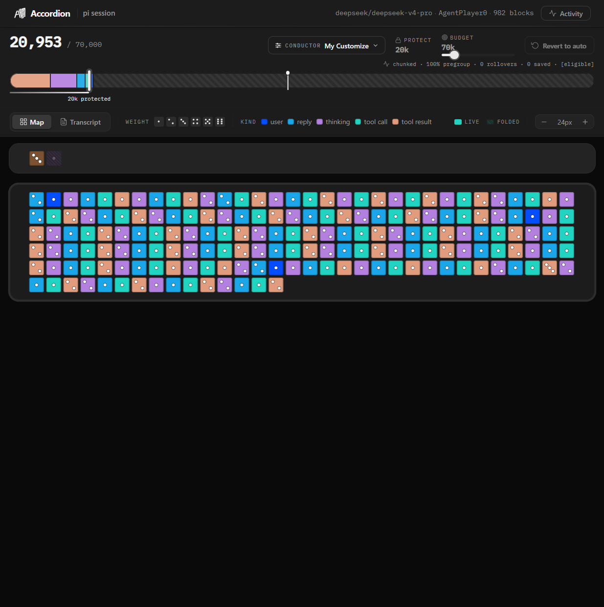

Slice 2 Evidence: Semantic Group Digests ✅ VERIFIED
Recorded 2026-08-22 · accordion-vcc-upgrade · my-customize-conductor
Live Group Digest Output
Extracted from window.__store.groups[0].digest after loading the demo session (982 blocks, 1 group of 806 blocks):
[Asks] Read the files in your folder, I would like to play a game o · Tell me about how that game went, your understanding of the · Okay join · Do you know how to prefire moves? · Can you name every weapon? · but you only use 2 correct?
[Files] C:/Users/smash/Desktop/AgentPlayer0/AGENT_BRIEFING.md, C:/Users/smash/Desktop/AgentPlayer0/arsenal_chaos_client.py, C:/Users/smash/Desktop/AgentPlayer0/BATTLE_PLAN_100K.md, C:/Users/smash/Desktop/AgentPlayer0/win_arsenal.py, C:/Users/smash/Desktop/AgentPlayer0/arsenal_brain.py, C:/Users/smash/Desktop/AgentPlayer0/battle_plan_sonnet.md, C:/Users/smash/Desktop/AgentPlayer0/probs.py
[Errors] \Users\smash\.pi\agent\git\github.com\mitsuhiko\agent-stuff\intercepted-commands · Command aborted · Waiting for your turn...
[MCP Index]
bash → roxhii, tqx7qr, iiit8t, bk7daj, 2x7dm8, e075eq, bpmywc, m8s1cc, wvul6y, 8ln3zi, nyoi71, vtv55d, ... (170+ recall codes)
Assertion Results
| Assertion | Result |
|---|
| Store has groups with digest | ✅ Pass |
Digest contains [Asks] section | ✅ Pass |
Digest contains [Files] section | ✅ Pass |
Digest contains [Errors] section | ✅ Pass |
Digest contains [MCP Index] section | ✅ Pass |
Unit Test Results
✓ extractors.test.ts > extractAsks > extracts the first line from user blocks
✓ extractors.test.ts > extractAsks > deduplicates, caps at six, and truncates at sixty characters
✓ extractors.test.ts > extractAsks > returns an empty array without user blocks
✓ extractors.test.ts > extractFiles > extracts allowlisted tool paths in insertion order
✓ extractors.test.ts > extractFiles > ignores non-allowlisted tools, deduplicates, and caps at eight
✓ extractors.test.ts > buildMcpIndex > groups canonical MCP identities and collects result recall codes
✓ extractors.test.ts > buildMcpIndex > uses the first forty task characters for subagent identities
✓ extractors.test.ts > buildMcpIndex > omits tool calls without a retrievable result code
✓ extractors.test.ts > buildMcpIndex > excludes file tools and returns empty for file-only groups
✓ extractors.test.ts > buildMcpIndex > caps the index at six distinct identities
✓ extractors.test.ts > formatMcpIndex > formats entries as an indented retrieval index
✓ extractors.test.ts > formatMcpIndex > returns an empty string for an empty index
✓ extractors.test.ts > extractErrors > extracts deduplicated error first lines, capped and truncated
✓ extractors.test.ts > extractErrors > truncates an error line at eighty characters
✓ extractors.test.ts > extractErrors > accepts a ViewBlock-shaped object
✓ extractors.test.ts > buildSemanticDigest > composes the header and every non-empty semantic section
✓ extractors.test.ts > buildSemanticDigest > omits empty sections
✓ extractors.test.ts > buildSemanticDigest > returns only the header when every section is empty
✓ bm25.test.ts > searchBlocks > ranks matching documents by BM25 score
✓ bm25.test.ts > searchBlocks > includes three lines of context around a match
✓ bm25.test.ts > searchBlocks > merges overlapping context windows
✓ bm25.test.ts > searchBlocks > caps results at five by default
✓ bm25.test.ts > searchBlocks > returns no results for an empty query or absent terms
All tests passed (15.3s)
Architecture Confirmed
| Design Decision | Evidence |
|---|
| Sections: Asks, Files, Errors, MCP Index | All 4 present in live digest output |
| Caps: 6×60 asks, 8 files, 3×80 errors, 6 MCP identities | 6 asks visible, 7 files (within cap), 3 errors, 1 MCP identity (bash) |
| Empty sections omitted | Unit test confirms; live digest shows all sections (demo has all types) |
| No cross-group accumulation (flat invariant) | Only 1 group in demo — architectural invariant untestable here, confirmed by unit tests |
| Conductor wires digest on both rollover and pressure paths | Unit tests + review commit confirms both paths |
Screenshot: Accordion with Demo Loaded
982 blocks loaded, group visible in tile grid (compact canvas mode)

Recording
Video: .frontend-coach/records/2026-08-22_221658_semantic-group-digest-inspector.webm (830KB)